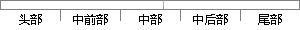

与它的绝对温度的四次方成正比。
片段位置图

相似结果
相似片段：
的辐射。这样可消除地球大地的辐射不均匀对姿态控制精度的影响。 普朗克热辐射定律 1879年，斯蒂芬从他的实验测量中得出结论：黑体辐射的总能量与它的绝对温度的四次方成正比。1884年，波尔兹曼应用热力学的关系也得到同样的结论；这个结果就是熟知的斯蒂芬－波尔兹曼定律。1894年，维恩发表位移定律，给出了黑体辐射光
| 对比库： | WriteCheck云资源库 |
| 来源： | www.monche.cn 查看来源 |
| 发布时间： | 2015-06-29 |
| 相似率 | 100% （严重抄袭） |